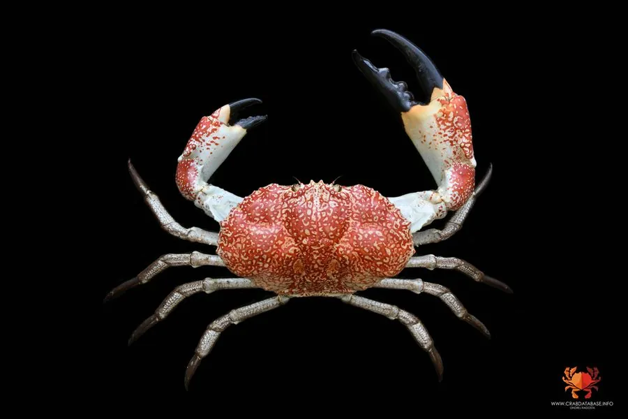

甲壳动物 · 动物界
塔斯马尼亚巨蟹 Pseudocarcinus gigas

澳大利亚南部深水的巨型蟹类，甲宽可逾四十厘米、体重超十千克，一对大螯粗壮有力，是世界上最重的蟹类之一。
- 分类
- 门节肢动物门纲软甲纲目十足目科哲蟹科属拟哲蟹属
- 栖息环境
- 水深 20–800 米的泥质与沙泥质海底，偏好水温较低的深水区
- 地理分布
- 澳大利亚南部大陆架、塔斯马尼亚周边及巴斯海峡
- 保护级别
- IUCN 未评估；澳大利亚实施捕捞配额与最小尺寸限制
物种志
塔斯马尼亚巨蟹是体型最大的蟹类之一，甲宽可达 40–46 厘米，体重 5–13 千克，雄性明显大于雌性。背甲宽阔呈椭圆形，表面光滑，底色为乳白至淡黄色，前部与螯足带有橙红至砖红色的斑块，煮熟后通体转为橙红；一对螯足极粗壮，右螯通常比左螯更大，螯指末端呈黑褐色，夹合力很强。步足粗短，适于在软泥底爬行。
它们分布于澳大利亚南部与塔斯马尼亚周边的深水海域，栖息于 20–800 米深的泥质与沙泥质海底，常在较深的水温较低处活动。食性为杂食兼腐食，捕食螺、贝、海胆、海星、小鱼与腐肉，靠嗅觉远距离找到尸体。生长缓慢，雄性约 9 年、雌性约 12 年才性成熟，雌蟹每两年才产一次卵，卵附着于腹部的抱卵肢上，孵化期长达数月。由于生长慢、繁殖周期长，商业捕捞需严格配额管理，澳大利亚已实施尺寸限制与禁捕期。
形态与习性
- 甲宽可达 40–46 cm，体重 5–13 kg
- 食性螺、贝、海胆、海星、小鱼与腐肉
- 栖息深度约 20–800 m 的泥质海底
- 性成熟雄性约 9 年，雌性约 12 年
- 繁殖雌蟹约每两年产一次卵，卵附着于腹部抱卵肢
- 螯足右螯通常大于左螯，螯指末端黑褐色，夹合力强
- 寿命可达 30 年以上
趣味知识
- 塔斯马尼亚巨蟹是世界上最重的蟹类之一，一只大个体能超过十千克。
- 它的右螯通常比左螯更大，夹碎螺壳毫不费力。
- 它生长极慢，要长到性成熟需要近十年，因此捕捞配额管得很严。